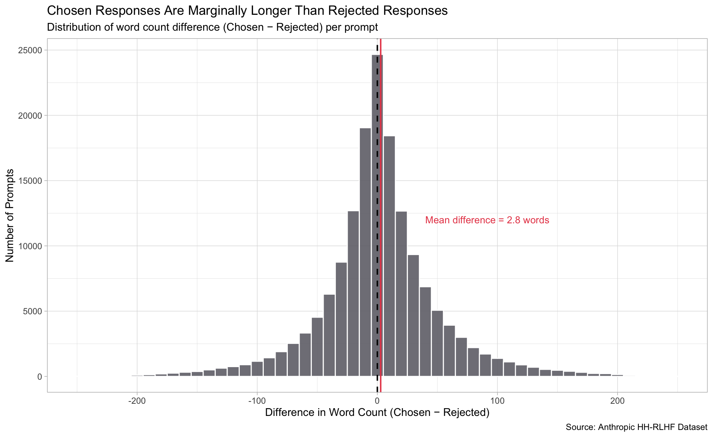

Figure 01
Response Length
This visualization examines whether users systematically preferred longer or shorter AI responses by plotting the distribution of word count differences between chosen and rejected responses for each prompt pair. The distribution follows a normal curve, with a mean difference of only 2.8 words. This finding challenges the assumption that more elaborate, detailed responses are inherently preferred, suggesting that users were capable of distinguishing response quality independent of length.